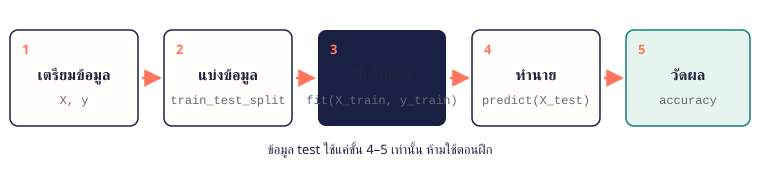

เมื่อจบบทนี้ นิสิตจะทำได้ แยก feature กับ target แบ่ง train/test ฝึกโมเดลด้วย fit ทำนายด้วย predict และวัดผลด้วย accuracy/error
17.1 Machine Learning คืออะไร แทนที่จะเขียนกติกาเอง เราให้ตัวอย่างที่มีคำตอบจำนวนมากกับโมเดล แล้วโมเดลหารูปแบบเอง ข้อมูลแบ่งเป็น feature (X สิ่งที่รู้) และ target (y สิ่งที่อยากทำนาย)
17.2 ขั้นตอนมาตรฐาน งาน ML เกือบทุกงานใน scikit-learn ทำตามขั้นตอนเดียวกัน 5 ขั้น เปลี่ยนแค่ชนิดโมเดล

ขั้นตอน ML: เตรียมข้อมูล X, y → แบ่ง train/test → fit กับ train → predict กับ test → วัดผล topic_17_2.py
from sklearn.datasets import load_iris
X , y = load_iris (return_X_y=True )
print (X .shape, y.shape)
print ("ตัวอย่างแรก:" , X [0 ], "→ พันธุ์" , y[0 ])ผลลัพธ์ (150, 4) (150,)
ตัวอย่างแรก: [5.1 3.5 1.4 0.2] → พันธุ์ 0 17.3 แบ่งข้อมูล train/test ต้องเก็บข้อมูลส่วนหนึ่งไว้ทดสอบ เหมือนข้อสอบที่นักเรียนไม่เคยเห็น ถ้าวัดผลด้วยข้อมูลที่ใช้ฝึก คะแนนจะสูงเกินจริง
topic_17_3.py
from sklearn.datasets import load_iris
from sklearn.model_selection import train_test_split
X , y = load_iris (return_X_y=True )
X_train , X_test , y_train, y_test = train_test_split (
X , y, test_size=0.25 , random_state=42 , stratify=y)
print (len (X_train ), "train /" , len (X_test ), "test" )ผลลัพธ์ 112 train / 38 test จำง่าย ๆ random_state ทำให้แบ่งเหมือนเดิมทุกครั้ง stratify=y ให้สัดส่วนแต่ละคลาสในชุด train/test เท่ากัน
17.4 fit และ predict ทุกโมเดลใช้ 2 คำสั่งหลัก: model.fit(X_train, y_train) ฝึกโมเดล และ model.predict(X_new) ทำนาย ลองเปลี่ยนโมเดลได้โดยแก้บรรทัดเดียว
topic_17_4.py
from sklearn.datasets import load_iris
from sklearn.model_selection import train_test_split
from sklearn.neighbors import KNeighborsClassifier
X , y = load_iris (return_X_y=True )
X_train , X_test , y_train, y_test = train_test_split (
X , y, test_size=0.25 , random_state=42 , stratify=y)
model = KNeighborsClassifier (n_neighbors=5 )
model.fit (X_train , y_train)
print ("ทำนาย:" , model.predict (X_test [:6 ]))
print ("เฉลย: " , y_test[:6 ])ผลลัพธ์ ทำนาย: [0 1 1 1 0 1]
เฉลย: [0 1 1 1 0 1] 17.5 วัดผลโมเดล Classification วัดด้วย accuracy (สัดส่วนที่ทายถูก) และ confusion matrix (ทายผิดเป็นคลาสไหน) ส่วน Regression วัดด้วยค่าคลาดเคลื่อน เช่น MAE
topic_17_5.py
from sklearn.datasets import load_iris
from sklearn.model_selection import train_test_split
from sklearn.tree import DecisionTreeClassifier
from sklearn.metrics import accuracy_score, confusion_matrix
X , y = load_iris (return_X_y=True )
X_train , X_test , y_train, y_test = train_test_split (
X , y, test_size=0.25 , random_state=42 , stratify=y)
model = DecisionTreeClassifier (random_state=0 ).fit (X_train , y_train)
pred = model.predict (X_test )
print ("accuracy" , round (accuracy_score (y_test, pred), 3 ))
print (confusion_matrix (y_test, pred))ผลลัพธ์ accuracy 0.921
[[12 0 0]
[ 0 12 1]
[ 0 2 11]] 17.6 Pipeline: รวมการเตรียมข้อมูลกับโมเดล โมเดลหลายแบบทำงานดีขึ้นเมื่อปรับสเกล feature ก่อน Pipeline รวมขั้นปรับสเกลกับโมเดลเป็นก้อนเดียว ช่วยไม่ให้ลืมขั้นตอนตอนทำนาย และไม่ให้ข้อมูล test รั่วไปตอนฝึก
topic_17_6.py
from sklearn.datasets import load_wine
from sklearn.model_selection import train_test_split
from sklearn.pipeline import make_pipeline
from sklearn.preprocessing import StandardScaler
from sklearn.linear_model import LogisticRegression
X , y = load_wine (return_X_y=True )
X_train , X_test , y_train, y_test = train_test_split (
X , y, test_size=0.25 , random_state=0 , stratify=y)
model = make_pipeline (StandardScaler (), LogisticRegression (max_iter=1000 ))
model.fit (X_train , y_train)
print ("accuracy" , round (model.score (X_test , y_test), 3 ))
ตัวอย่างโปรแกรม
ตัวอย่าง 17.1 ทำนายพันธุ์ดอกไม้ทั้งกระบวนการครบ 5 ขั้น: ข้อมูล → แบ่ง → ฝึก → ทำนาย → วัดผล แล้วทำนายดอกไม้ดอกใหม่
example_17_1.py
from sklearn.datasets import load_iris
from sklearn.model_selection import train_test_split
from sklearn.neighbors import KNeighborsClassifier
from sklearn.metrics import accuracy_score
iris = load_iris ()
X_train , X_test , y_train, y_test = train_test_split (
iris.data, iris.target, test_size=0.25 , random_state=42 , stratify=iris.target)
model = KNeighborsClassifier (n_neighbors=5 )
model.fit (X_train , y_train)
print (f"accuracy {accuracy_score(y_test, model.predict(X_test)):.3f}" )
new_flower = [[5.0 , 3.4 , 1.5 , 0.2 ]]
species = model.predict (new_flower)[0 ]
print ("ดอกใหม่เป็นพันธุ์" , iris.target_names[species])ผลลัพธ์ accuracy 0.974
ดอกใหม่เป็นพันธุ์ setosa อธิบาย load_iris() ให้ทั้งข้อมูลและชื่อพันธุ์ (target_names)KNN ทายจากเพื่อนบ้านที่ใกล้ที่สุด 5 ตัวในข้อมูลฝึก ข้อมูลใหม่ต้องเป็นรูปแบบเดียวกับ X: list ของแถว แต่ละแถวมี 4 feature
ตัวอย่าง 17.2 ทำนายคะแนนจากชั่วโมงอ่านหนังสือRegression: ทำนายตัวเลข แล้ววาดเส้นที่โมเดลเรียนรู้
example_17_2.py
import numpy as np
import matplotlib.pyplot as plt
from sklearn.linear_model import LinearRegression
from sklearn.metrics import mean_absolute_error
hours = np.array ([[1 ], [2 ], [3 ], [4 ], [5 ], [6 ], [7 ], [8 ]])
scores = np.array ([52 , 55 , 61 , 64 , 70 , 72 , 79 , 83 ])
model = LinearRegression ().fit (hours, scores)
print (f"คะแนน = {model.coef_[0]:.2f} x ชั่วโมง + {model.intercept_:.2f}" )
print (f"อ่าน 5.5 ชั่วโมง ทำนายได้ {model.predict([[5.5]])[0]:.1f} คะแนน" )
print (f"MAE {mean_absolute_error(scores, model.predict(hours)):.2f}" )
plt.scatter (hours, scores, label="data" )
plt.plot (hours, model.predict (hours), color="red" , label="model" )
plt.xlabel ("Study hours" )
plt.ylabel ("Score" )
plt.legend ()
plt.show ()ผลลัพธ์ · กราฟที่ได้จากการรันโค้ดนี้ คะแนน = 4.48 x ชั่วโมง + 46.86
อ่าน 5.5 ชั่วโมง ทำนายได้ 71.5 คะแนน
MAE 0.82 อธิบาย X ต้องเป็น 2 มิติ ([[1], [2], ...]) แม้มี feature เดียว coef_ คือความชัน intercept_ คือจุดตัดแกน y โมเดลนี้อธิบายได้เป็นสมการMAE บอกว่าโดยเฉลี่ยทายพลาดกี่คะแนน (ตัวอย่างนี้วัดกับข้อมูลฝึกเพื่อดูภาพรวมเท่านั้น)
แบบฝึกหัดท้ายบท
เรียงจากง่ายไปยาก ลองเขียนเองให้ได้ผลลัพธ์ตรงตัวอย่างก่อน แล้วค่อยเปิดเฉลย
ระดับความยาก: ง่าย ปานกลาง ท้าทาย
ข้อ 17.1 สำรวจชุดข้อมูลง่าย โหลด load_wine() แล้วแสดงจำนวนตัวอย่าง จำนวน feature ชื่อ feature 3 ตัวแรก และชื่อคลาส
เข้าใจโจทย์
โจทย์ให้ ชุดข้อมูลไวน์ใน scikit-learn
ต้องหา 178 ตัวอย่าง 13 feature และชื่อต่าง ๆวิธีคิด data = load_wine()data.data.shapedata.feature_names, data.target_namesตัวอย่างผลลัพธ์ 178 ตัวอย่าง 13 feature
['alcohol', 'malic_acid', 'ash']
[np.str_('class_0'), np.str_('class_1'), np.str_('class_2')]
🔒 ใส่รหัสเพื่อดูเฉลย
แนวคำตอบและเหตุผล
สำรวจข้อมูลก่อนเสมอ จะรู้ว่ามี feature อะไร และเป็นงาน classification กี่คลาส
ex_17_1.py
from sklearn.datasets import load_wine
data = load_wine ()
rows, cols = data.data.shape
print (f"{rows} ตัวอย่าง {cols} feature" )
print (data.feature_names[:3 ])
print (list (data.target_names))
ข้อ 17.2 แบ่งข้อมูล 80/20ง่าย แบ่ง iris เป็น train 80% test 20% แบบ stratify แล้วนับจำนวนแต่ละคลาสในชุด test
เข้าใจโจทย์
โจทย์ให้ iris 150 ตัวอย่าง 3 คลาส
ต้องหา 30 ตัวอย่างทดสอบ คลาสละ 10 วิธีคิด test_size=0.2, stratify=y, random_state=1np.bincount(y_test) นับแต่ละคลาสตัวอย่างผลลัพธ์ 120 30
[10 10 10]
🔒 ใส่รหัสเพื่อดูเฉลย
แนวคำตอบและเหตุผล
stratify ทำให้ทุกคลาสมีสัดส่วนเท่ากันในชุดทดสอบ ผลวัดจึงไม่เอียงไปทางคลาสใดคลาสหนึ่ง
ex_17_2.py
import numpy as np
from sklearn.datasets import load_iris
from sklearn.model_selection import train_test_split
X , y = load_iris (return_X_y=True )
X_train , X_test , y_train, y_test = train_test_split (
X , y, test_size=0.2 , stratify=y, random_state=1 )
print (len (X_train ), len (X_test ))
print (np.bincount (y_test))
ข้อ 17.3 เปรียบเทียบโมเดลปานกลาง ฝึก KNN, Decision Tree และ Logistic Regression กับข้อมูลไวน์ชุดเดียวกัน แล้วเทียบ accuracy
เข้าใจโจทย์
โจทย์ให้ load_wine แบ่ง 75/25 random_state=0 stratify
ต้องหา accuracy ของ 3 โมเดล วิธีคิด เก็บโมเดลใน dict ชื่อ → โมเดล วนลูป fit แล้ว score(X_test, y_test) Logistic Regression ใส่ max_iter=5000 ตัวอย่างผลลัพธ์ KNN 0.667
Decision Tree 0.889
Logistic 0.956
🔒 ใส่รหัสเพื่อดูเฉลย
แนวคำตอบและเหตุผล
ทุกโมเดลใช้ fit/score เหมือนกัน การเปรียบเทียบจึงเขียนเป็นลูปได้ KNN ได้คะแนนต่ำเพราะ feature ของไวน์มีสเกลต่างกันมาก ซึ่งแก้ได้ในข้อถัดไป
ex_17_3.py
from sklearn.datasets import load_wine
from sklearn.model_selection import train_test_split
from sklearn.neighbors import KNeighborsClassifier
from sklearn.tree import DecisionTreeClassifier
from sklearn.linear_model import LogisticRegression
X , y = load_wine (return_X_y=True )
X_train , X_test , y_train, y_test = train_test_split (
X , y, test_size=0.25 , random_state=0 , stratify=y)
models = {
"KNN" : KNeighborsClassifier (),
"Decision Tree" : DecisionTreeClassifier (random_state=0 ),
"Logistic" : LogisticRegression (max_iter=5000 ),
}
for name, model in models.items ():
model.fit (X_train , y_train)
print (f"{name:<14} {model.score(X_test, y_test):.3f}" )
ข้อ 17.4 ปรับสเกลด้วย Pipelineปานกลาง ทำ KNN กับข้อมูลไวน์อีกครั้ง โดยใช้ Pipeline ที่มี StandardScaler นำหน้า แล้วเทียบกับ KNN แบบไม่ปรับสเกล
เข้าใจโจทย์
โจทย์ให้ load_wine แบ่งเหมือนข้อที่แล้ว
ต้องหา accuracy ของ KNN ก่อนและหลังปรับสเกล วิธีคิด make_pipeline(StandardScaler(), KNeighborsClassifier())ฝึกและวัดผลทั้งสองแบบ ตัวอย่างผลลัพธ์ ไม่ปรับสเกล 0.667
ปรับสเกล 0.933
🔒 ใส่รหัสเพื่อดูเฉลย
แนวคำตอบและเหตุผล
KNN วัดระยะห่าง feature ที่ค่าใหญ่ (เช่น 1000) จะกลบ feature ค่าเล็ก (เช่น 0.5) การปรับสเกลให้ทุก feature มีน้ำหนักใกล้กัน
ex_17_4.py
from sklearn.datasets import load_wine
from sklearn.model_selection import train_test_split
from sklearn.neighbors import KNeighborsClassifier
from sklearn.pipeline import make_pipeline
from sklearn.preprocessing import StandardScaler
X , y = load_wine (return_X_y=True )
X_train , X_test , y_train, y_test = train_test_split (
X , y, test_size=0.25 , random_state=0 , stratify=y)
raw = KNeighborsClassifier ().fit (X_train , y_train)
scaled = make_pipeline (StandardScaler (), KNeighborsClassifier ()).fit (X_train , y_train)
print (f"ไม่ปรับสเกล {raw.score(X_test, y_test):.3f}" )
print (f"ปรับสเกล {scaled.score(X_test, y_test):.3f}" )
ข้อ 17.5 ทำนายราคาบ้านจำลองท้าทาย ข้อมูลบ้าน 8 หลัง (พื้นที่ ตร.ม., จำนวนห้องนอน) กับราคา (ล้านบาท) ให้ฝึก LinearRegression แล้วทำนายบ้าน 120 ตร.ม. 3 ห้องนอน
เข้าใจโจทย์
โจทย์ให้ X [[50,1],[65,2],[80,2],[95,3],[110,3],[130,4],[150,4],[170,5]] y [1.8,2.4,2.9,3.5,3.9,4.7,5.3,6.1]
ต้องหา ราคาที่ทำนาย และสมการที่โมเดลเรียนรู้ วิธีคิด X มี 2 feature ต่อแถว coef_ มี 2 ค่า (ต่อ ตร.ม. และต่อห้อง)predict([[120, 3]])ตัวอย่างผลลัพธ์ ราคา = 0.0301 x ตร.ม. + 0.167 x ห้อง + 0.123
บ้าน 120 ตร.ม. 3 ห้อง ≈ 4.24 ล้านบาท
🔒 ใส่รหัสเพื่อดูเฉลย
แนวคำตอบและเหตุผล
Linear Regression หาน้ำหนักของแต่ละ feature ผลที่ได้อ่านเป็นสมการได้ จึงอธิบายเหตุผลของการทำนายได้ ต่างจากโมเดลซับซ้อนหลายแบบ
ex_17_5.py
from sklearn.linear_model import LinearRegression
X = [[50 , 1 ], [65 , 2 ], [80 , 2 ], [95 , 3 ], [110 , 3 ], [130 , 4 ], [150 , 4 ], [170 , 5 ]]
y = [1.8 , 2.4 , 2.9 , 3.5 , 3.9 , 4.7 , 5.3 , 6.1 ]
model = LinearRegression ().fit (X , y)
a, b = model.coef_
print (f"ราคา = {a:.4f} x ตร.ม. + {b:.3f} x ห้อง + {model.intercept_:.3f}" )
print (f"บ้าน 120 ตร.ม. 3 ห้อง ≈ {model.predict([[120, 3]])[0]:.2f} ล้านบาท" )
ข้อ 17.6 ตรวจว่าโมเดลจำข้อสอบหรือไม่ท้าทาย ฝึก Decision Tree แบบไม่จำกัดความลึกกับ load_breast_cancer แล้วเทียบ accuracy บน train กับ test จากนั้นจำกัด max_depth=3 แล้วเทียบอีกครั้ง
เข้าใจโจทย์
โจทย์ให้ load_breast_cancer แบ่ง 75/25 random_state=0 stratify
ต้องหา accuracy train/test ของทั้งสองแบบ วิธีคิด score กับ train และ testtrain สูงมากแต่ test ต่ำกว่า = overfitting เปลี่ยน max_depth แล้วสังเกตช่องว่างระหว่างสองค่า ตัวอย่างผลลัพธ์ max_depth=None: train 1.000 test 0.902
max_depth=3: train 0.977 test 0.916
🔒 ใส่รหัสเพื่อดูเฉลย
แนวคำตอบและเหตุผล
ต้นไม้ที่ไม่จำกัดความลึกได้ train = 1.000 คือจำข้อมูลฝึกได้หมด (overfitting) การจำกัดความลึกทำให้ช่องว่าง train/test แคบลง ซึ่งเป็นสัญญาณว่าโมเดลเรียนรู้รูปแบบทั่วไปมากกว่าการท่องจำ
ex_17_6.py
from sklearn.datasets import load_breast_cancer
from sklearn.model_selection import train_test_split
from sklearn.tree import DecisionTreeClassifier
X , y = load_breast_cancer (return_X_y=True )
X_train , X_test , y_train, y_test = train_test_split (
X , y, test_size=0.25 , random_state=0 , stratify=y)
for depth in [None , 3 ]:
tree = DecisionTreeClassifier (max_depth=depth, random_state=0 ).fit (X_train , y_train)
print (f"max_depth={depth}: train {tree.score(X_train, y_train):.3f} test {tree.score(X_test, y_test):.3f}" )